What is the "Black Box" in Medical AI?
In medical AI, a “black box” refers to any model—such as a convolutional neural network (CNN) or large language model (LLM)—that makes predictions without clearly revealing how those predictions were formed. These models can analyze thousands of imaging features or textual cues that are invisible to human clinicians, yet offer no built-in explanation for why a decision was made.
This lack of transparency becomes a major barrier in clinical settings. Physicians must be able to justify diagnoses and treatment decisions, and opaque predictions make it difficult to assess whether a model is relying on valid clinical evidence or spurious correlations. Even highly accurate systems may go unused if clinicians cannot understand what the model is focusing on or why its output should be trusted.
Because medical decisions carry real patient risk, explainability is not optional—it is essential. Understanding a model’s reasoning helps clinicians evaluate reliability, identify potential biases, and integrate AI tools safely into workflows. In our project, explainability serves as the foundation for analyzing how imaging and language models interpret features related to pulmonary edema.
Why Pulmonary Edema Matters
Pulmonary edema is a life-threatening condition caused by fluid accumulation in the lungs, often linked to heart failure or cardiac dysfunction. Because symptoms can progress rapidly, delayed or inconsistent detection can significantly worsen patient outcomes. Clinicians typically rely on chest X-rays and radiology reports to assess edema, but these indicators can be subtle, vary in appearance, and be interpreted differently across readers.
This makes pulmonary edema a powerful case study for explainable medical AI. Even when modern models—such as CNNs or LLMs—perform well, their predictions remain difficult to interpret without dedicated explainability methods. To be clinically useful, these models must reveal what visual regions they focus on and which linguistic cues influence their decisions.
Our project explores how multimodal AI systems can support clinicians by analyzing both imaging and text while also providing transparent explanations of the features driving their predictions. The goal is not to replace clinical expertise, but to build tools that enhance consistency, accelerate triage, and ultimately improve patient safety in high-risk scenarios.
The primary stakeholders for this system are radiologists and clinicians who interpret chest X-rays, as well as medical AI researchers studying interpretable diagnostic models. These users require tools that not only generate accurate predictions but also provide transparent explanations that help justify clinical decisions and build trust in AI-assisted workflows.
What We Built 🛠️
To explore how explainability can improve trust in medical AI, we built a multimodal system that analyzes both chest X-ray images and radiology report text while providing transparent explanations for each model’s predictions. Our approach combines two components: a convolutional neural network (CNN) for imaging, and a fine-tuned large language model (LLM) for clinical text.
Imaging Model (VGG16 & ResNet50)
We trained two CNN architectures—VGG16 and ResNet50—to predict a continuous biomarker value (BNPP) directly from grayscale chest X-rays. Following our poster’s model design, we replaced each network’s final classification layers with a single linear output for regression.
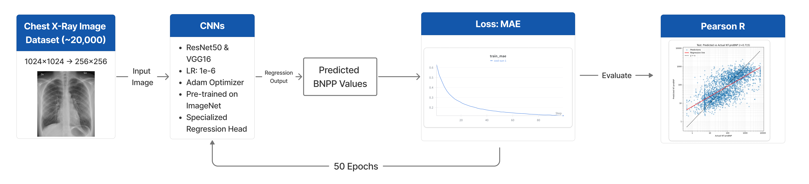
These models allow us to study how different image features influence biomarker-related predictions, which is clinically relevant for assessing pulmonary edema severity.
Text Model (MediPhi + LoRA)
For the textual component, we fine-tuned Microsoft’s MediPhi—a domain-specific medical LLM—using Low-Rank Adaptation (LoRA). The model learns to classify edema severity into four structured categories: absent, mild, moderate, and severe. Only lightweight adapter layers were updated, while the base model remained frozen.
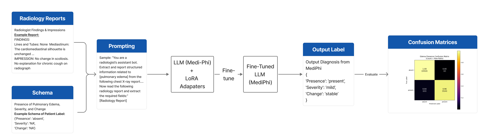
This setup enables the LLM to pick up clinically meaningful language patterns in radiology reports without needing full retraining.
Explainability Across Both Modalities
A central goal of this project is not only to generate predictions, but to understand what drives them. To do this, we applied several complementary explainability techniques:
- Grad-CAM to visualize the specific chest regions most influential to CNN predictions
- Image Ablation to measure how masking different areas affects model performance
- LIME to identify which words or phrases contribute most to LLM severity classifications
- Cosine Embedding Analysis to examine how the LLM organizes clinical concepts in embedding space
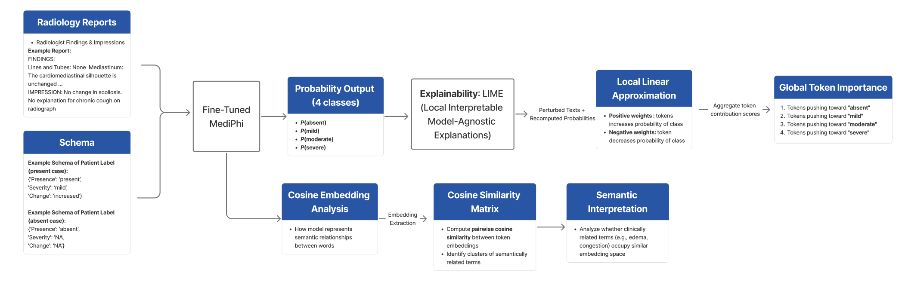
Together, these methods reveal whether the models rely on clinically meaningful features rather than irrelevant patterns—addressing the “black box” problem in a practical, interpretable way.
Results 📊
Our results evaluate how both the CNN and LLM models make decisions, and whether their internal reasoning aligns with clinically meaningful features. By analyzing image regions, text tokens, and embedding relationships, we uncover patterns that help explain each model’s predictions.
CNN Explainability Findings (VGG16 & ResNet50)
Image Ablation
When we systematically masked different regions of the X-ray, both CNNs showed the largest drop in performance when the central chest areas were removed. In contrast, masking the peripheral borders caused minimal change in prediction accuracy. This suggests that both models rely primarily on clinically relevant lung and cardiac regions, rather than learning artifacts from the edges of the image.
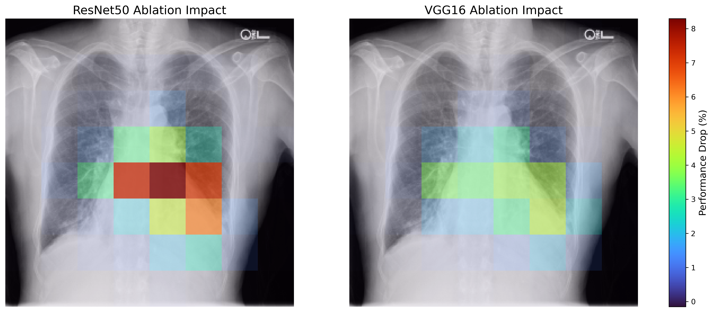
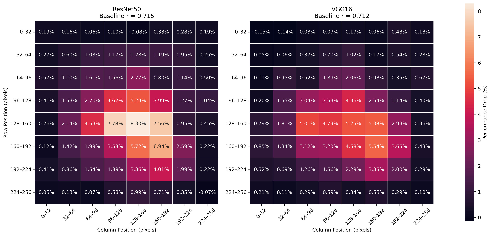
Grad-CAM Attention Maps
Grad-CAM visualizations revealed clear differences between the two CNN architectures:
- VGG16 produced broad, diffuse activation across the chest, including the lungs and cardiac silhouette.
- ResNet50 showed more consistent and concentrated attention, especially around the heart and areas associated with pulmonary congestion.
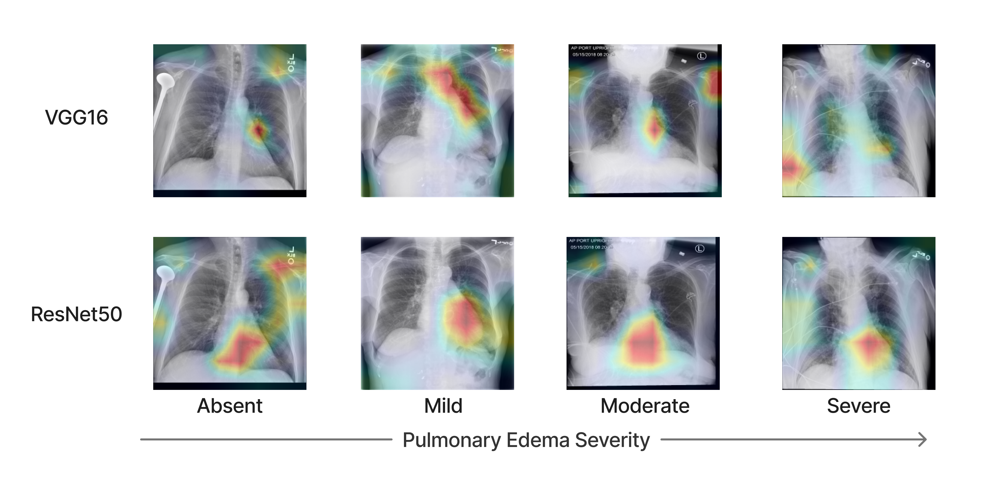
These patterns match clinical expectations—pulmonary edema often manifests through perihilar haziness and cardiac-related changes—indicating that both models are focusing on medically meaningful regions.
In interpreting these results, attention maps should not be viewed as exact explanations of model reasoning. Instead, they provide an approximate indication of which anatomical regions influence predictions. Consistent attention around the heart and lung fields suggests the model is relying on clinically meaningful cues rather than image artifacts.
LLM Explainability Findings (MediPhi + LoRA)
Global LIME Token Importance
LIME analysis of the fine-tuned MediPhi model shows that its predictions reflect clinically interpretable linguistic structure:
- Higher severity levels (moderate/severe) are driven by terms indicating intensity, progression, congestion, or worsening conditions.
- Lower severity or absence classifications rely on expressions reflecting stability, negation, or uncertainty.
This indicates that the model is not simply memorizing phrases, but is using medically meaningful descriptors consistent with radiology report conventions.
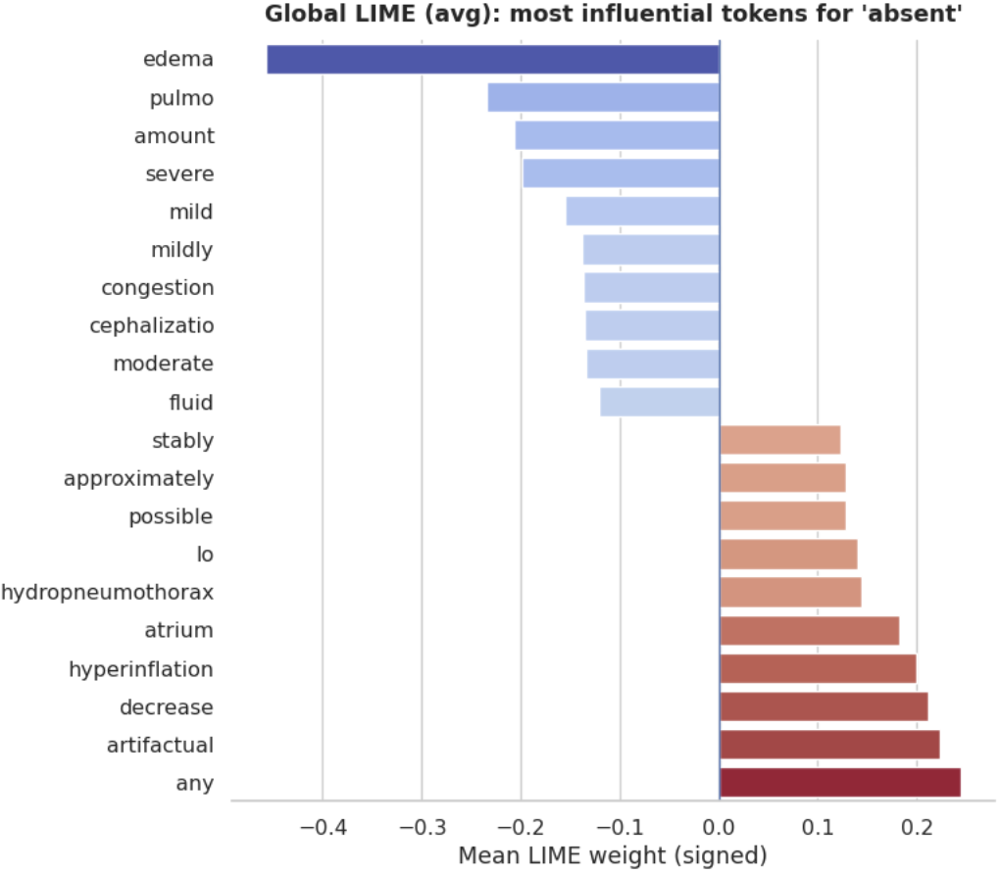
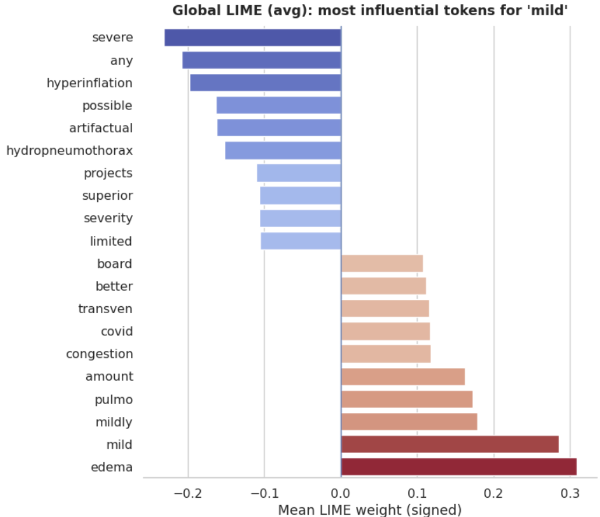
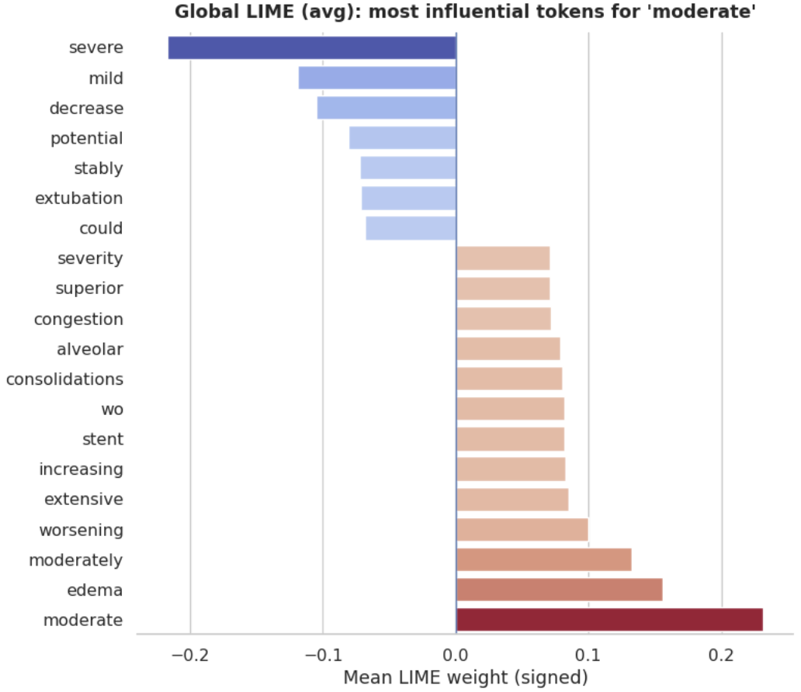
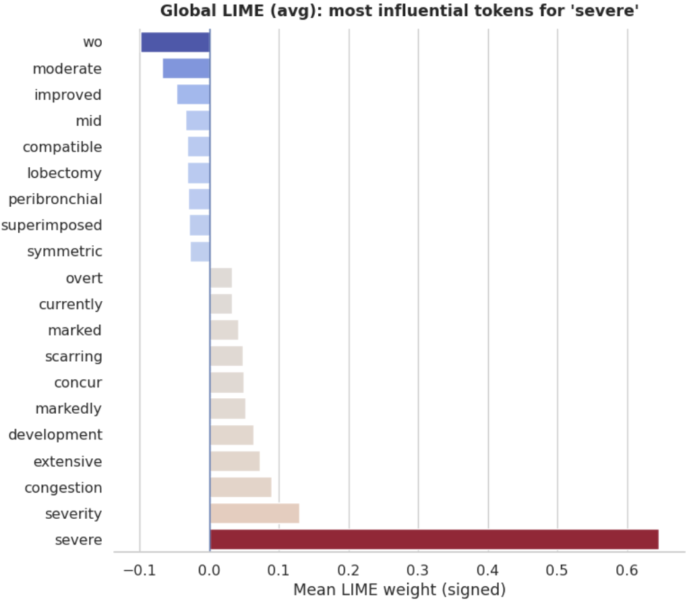
Cosine Embedding Analysis
The embedding similarity matrix shows that the LLM naturally organizes medical terms in a clinically meaningful way:
- Related edema-associated terms cluster near each other
- Negation-related or “normal” descriptors shift in the opposite direction
- The structure emerges independently of prediction-level attribution
This suggests the LLM has learned a coherent semantic space that aligns with radiological language patterns.
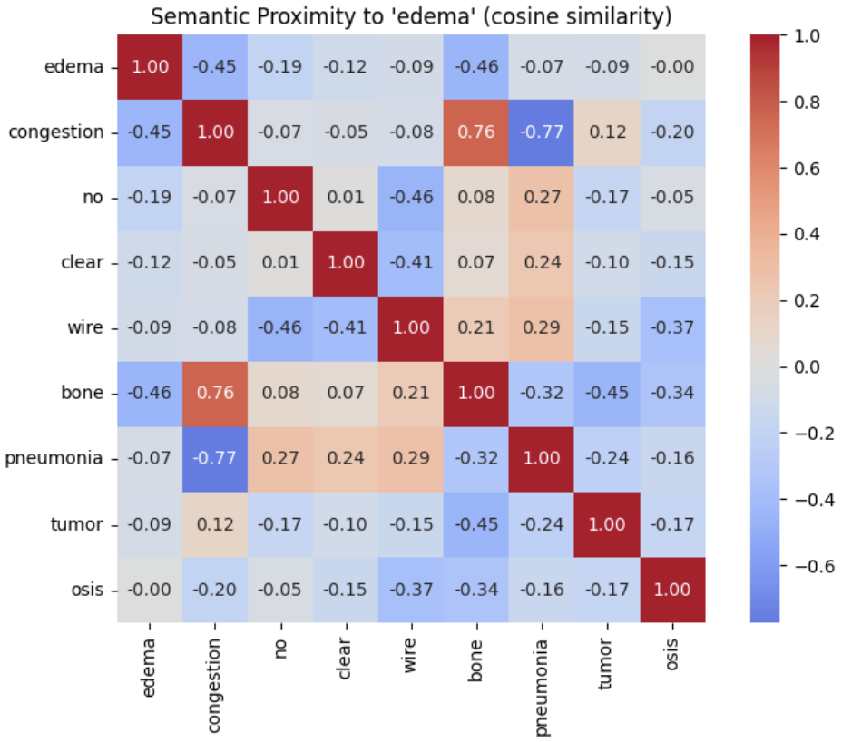
Overall Insights
Across both imaging and text modalities:
- The CNNs rely on core clinical regions linked to pulmonary edema
- ResNet50 demonstrates more anatomically precise focus than VGG16
- The LLM captures clinically realistic linguistic patterns
- Embedding analysis confirms that the model learns meaningful semantic structure rather than random associations
These results collectively show that the models are learning patterns that align with clinical reasoning, reducing the “black box” nature of their predictions and improving interpretability.
Methods 🔬
Dataset → Preprocessing → Model Training → Explainability
To make pulmonary edema more interpretable, we designed our methodology around two complementary modalities: medical imaging and clinical text. The imaging side uses convolutional neural networks (CNNs) to analyze chest X-rays, while the text side uses a fine-tuned medical large language model (LLM) to interpret radiology reports. Across both modalities, our goal was not only to generate predictions, but also to explain what features the models relied on and why those predictions were made.
During early experimentation, we initially trained CNN models without explainability analysis. However, this limited our ability to assess whether predictions relied on clinically meaningful features. We therefore incorporated Grad-CAM and ablation experiments to evaluate model attention patterns and better understand the reasoning behind predictions.
Dataset
Our data came from an anonymized UC San Diego clinical dataset. The imaging portion consisted of approximately 30,000 chest X-ray scans originally stored at 1024×1024 resolution. Each image was paired with patient metadata and a log-transformed N-terminal pro-B-type natriuretic peptide (BNPP) biomarker value, which served as the regression target for the CNN models. In parallel, the dataset also included radiology reports, and a curated subset of roughly 2,000 labeled reports contained structured annotations for pulmonary edema and related findings. This labeled subset was used for supervised language-model fine-tuning.
Preprocessing
Because full-resolution chest X-rays are computationally expensive to train on, all images were downsampled from 1024×1024 to 256×256, converted to grayscale, and normalized to the range [0, 1]. BNPP values were log-transformed and standardized using z-score normalization computed on the training set, then applied to validation and test data to avoid leakage.
For the text pipeline, the labeled radiology reports were split into training, validation, and test sets. Reports were tokenized using the MediPhi tokenizer, which converts the report text into subword token IDs suitable for transformer-based fine-tuning.
Imaging Model: CNN-Based BNPP Regression
We trained two convolutional neural networks—VGG16 and ResNet50—to predict standardized BNPP values directly from chest X-rays. Both architectures were adapted for regression by replacing their final classification layers with a single continuous output. The models were trained using the Adam optimizer with L1 loss (mean absolute error).
In the report, the CNN training setup uses a batch size of 16, a learning rate of 1×10-5, and 50 epochs, with evaluation based on Pearson correlation (r) between predicted and true BNPP values on the held-out test set. The poster presents the same pipeline at a high level and emphasizes the use of pretrained VGG16 and ResNet50 backbones for biomarker prediction from chest radiographs.
Text Model: MediPhi Fine-Tuning with LoRA
For the language component, we fine-tuned Microsoft's MediPhi, a domain-specific medical LLM, using Low-Rank Adaptation (LoRA). Rather than updating all model parameters, LoRA adds lightweight trainable adapter layers while keeping the base model weights frozen. This makes fine-tuning more efficient while preserving the model's medical language knowledge.
The fine-tuned model was trained to classify pulmonary edema severity into four categories: absent, mild, moderate, and severe. After evaluation on a held-out test set, the model was also applied to a larger pool of unlabeled radiology reports to generate predicted edema labels, which were then used to stratify corresponding X-ray images for downstream explainability analysis.
Explainability for Chest X-rays
to understand how the CNNs made their predictions, we applied two complementary explainability methods: Grad-CAM and image ablation.
Grad-CAM
Gradient-weighted Class Activation Mapping (Grad-CAM) is a model-specific method that highlights the image regions most responsible for a model's output. We computed Grad-CAM with respect to each CNN's scalar BNPP prediction and examined multiple convolutional layers to observe how spatial attention changed from early to deep feature representations. The resulting activation maps were resized, normalized and overlaid on the original chest X-rays. We also compared Grad-CAM patterns across edema severity groups predicted by the LLM to see whether attention shifted across absent, mild, moderate, and severe cases.
Image Ablation
We also used image ablation, a model-agnostic method that measures how important different spatial regions are systematically masking them. For each 256×256 X-ray, a 16×16 occlusion patch was moved across the image with a stride of 16 pixels. At each location, the patch was replaced with the image's mean pixel intensity, and the modified image was passed back through the CNN. We then measured how much performance changed when each region was removed, using changes in Pearson correlation on the test set to generate spatial sensitivity heatmaps.
Explainability for Radiology Reports
To interpret the LLM's predictions, we analyzed both local token importance and semantic structure within the model's learned embedding space.
LIME
LIME (Local Interpretable Model-Agnostic Explanations) was used to explain the MediPhi model's four-class edema severity predictions. For a given report, LIME creates perturbed versions of the input text by masking or removing subsets of tokens, observes how the model's class probabilities change, and fits a simple local surrogate model around that prediction. The resulting coefficients indicate which tokens push the prediction toward or away from each severity class. By aggregating these local explanations across many reports, we obtained broader global token-importance patterns associated with absent, mild, moderate, and severe edema.
Cosine Embedding Analysis
To study how the LLM internally represents clinical language, we performed cosine embedding analysis on selected edema-related terms. Cosine similarity measures how closely two token embedding align in the model's latent space. By comparing clinically meaningful anchor terms—such as words associated with edema, congestion, or negation—we could examine whether the model grouped related concepts together and separated opposing concepts apart. Unlike LIME, which explains individual predictions, this method helps reveal the broader semantic organization learned by the model.
Why This Multimodal Design Matters
Together, these methods let us examine both what the models predict and how they arrive there. The CNN pipeline provides spatial explanations over chest radiographs, while the LLM pipeline provides token-level and embedding-level explanations over radiology text. This multimodal design helps reduce the "black box" nature of medical AI by making model reasoning more visible, clinically interpretable and easier to evaluate.
Conclusion 🔍
Our findings show that explainability methods provide clear insight into how both imaging and text models make decisions about pulmonary edema. On the imaging side, CNN attention maps and ablation analyses consistently highlighted cardiac and perihilar lung regions, which are clinically central to edema assessment. ResNet50 demonstrated more localized and stable focus compared to VGG16, reflecting the benefits of deeper residual architectures.
For the language model, LIME revealed that MediPhi relies heavily on clinically meaningful descriptors—such as markers of severity, progression, or negation—to arrive at its predictions. Cosine embedding analysis further showed that the model organizes medical terminology into coherent semantic clusters, suggesting that its internal representations mirror real clinical structure even without explicit supervision.
Taken together, these multimodal results indicate that both the CNN and LLM components are not simply producing black-box outputs—they are leveraging features that align with established radiological reasoning. By making these internal patterns visible, our system advances the goal of transparent, trustworthy medical AI and demonstrates how explainability can support safer, more interpretable decision-making across imaging and text-based clinical workflows.
Scope of This Work
It is important to note that this project focuses on analyzing model interpretability rather than building a deployable clinical diagnostic system. Our goal is not to replace clinical decision-making or integrate directly into hospital workflows. Instead, we aim to evaluate whether modern deep learning models rely on clinically meaningful features when predicting pulmonary edema severity, and to demonstrate how explainability techniques can make these patterns more transparent.
Limitations
While our models show clinically meaningful attention patterns, several limitations remain.
- The dataset originates from a single institution, which may limit generalizability across hospitals.
- The LLM was fine-tuned on a relatively small labeled subset of reports (~2,000), which may affect robustness across diverse reporting styles.
- Explainability methods such as Grad-CAM and LIME provide approximations of model reasoning and should not be interpreted as definitive causal explanations.
Impact + Future Work 🚀
Impact
Our project demonstrates how explainability tools can make AI-driven medical predictions more transparent and clinically trustworthy. By analyzing both chest X-ray models and radiology-report language models, we show that:
- CNNs tend to focus on clinically meaningful regions—such as the heart and perihilar lung areas—when generating edema-related predictions.
- The MediPhi LLM relies on intuitive linguistic cues, with severity classifications shaped by descriptors of progression, congestion, or negation.
- Embedding-space analyses reveal that the model organizes medical concepts into coherent semantic clusters, rather than depending on spurious correlations.
Together, these findings highlight how multimodal explainability can help clinicians understand why a model made a particular prediction—an essential step toward real-world adoption of medical AI systems. By making model reasoning visible, such tools can help reduce missed findings, support more consistent triage decisions, and build trust in AI-assisted care.
Future Work
Although our system shows meaningful progress toward interpretable medical AI, several avenues could further enhance performance and clinical readiness:
- counterfactual reasoning
- feature-perturbation sensitivity analyses
- cross-modal alignment methods to compare image and text explanations directly
These additions would deepen our understanding of model behavior across both modalities.
Expanded Explainability Techniques
Building beyond Grad-CAM, LIME, and embedding analysis, future iterations could incorporate:
Integration of Additional Clinical Labels
Our current models focus on edema severity and BNPP prediction. Incorporating structured metadata—such as cardiac history, comorbidities, or radiologist assessments—could improve both predictive accuracy and contextual interpretability.
Larger and More Diverse Datasets
Training on data from multiple institutions, imaging devices, and reporting styles would help generalize the system and reduce model bias. This is especially important since edema appearance varies widely across patients and scanners.
Prospective & Temporal Evaluation
A key next step is testing the system on new, incoming radiographs and reports to validate whether explanations remain consistent outside the training distribution.
Toward Real Clinical Integration
Future work could explore how these explainability tools fit within radiology workflows—for example, using heatmaps or text highlights to support rapid triage or to flag ambiguous cases for closer review.
Meet the Team 👥
Mentor
Albert Hsiao
Mentor
Students
Brian Huynh
Student Researcher
Joshua Lee
Student Researcher
Zoya Hasan
Student Researcher